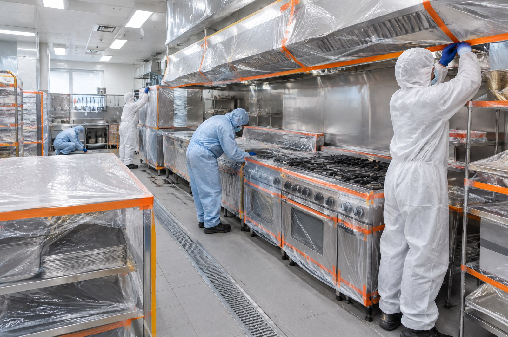
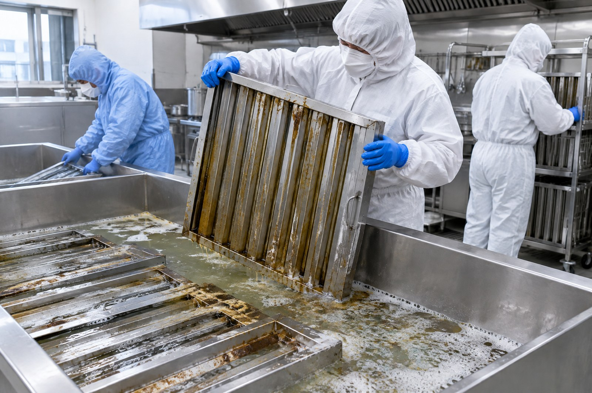
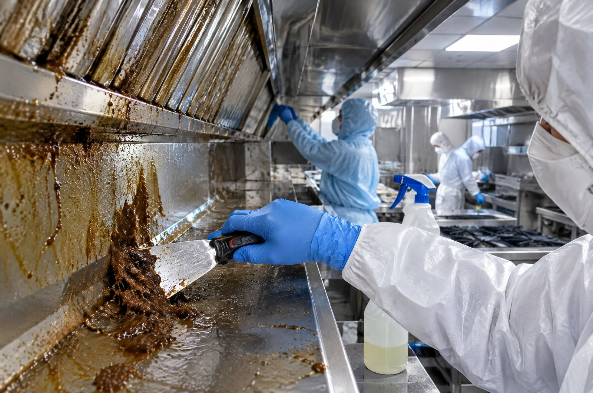
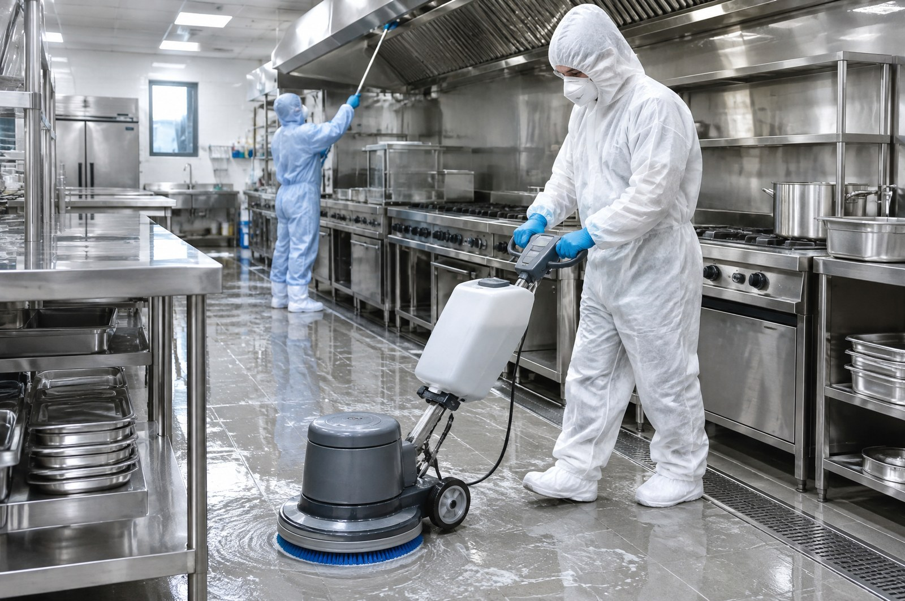

OUR PROCESS
전문팀은
이렇게 합니다

01
주방 장비 보양
가스레인지 · 조리대 · 냉장고를 비닐로 전부 덮고 시작합니다

02
필터 분리 · 약품 불림
기름 필터를 떼어 세척액에 담가 굳은 기름을 녹입니다

03
후드 내부 기름 제거
안쪽 벽과 이음새까지 긁어내고 닦아냅니다

04
바닥 · 주변 마감
떨어진 기름과 물기까지 정리하고 나옵니다
05
사진 보고
작업 전후 사진을 사장님께 보내드립니다